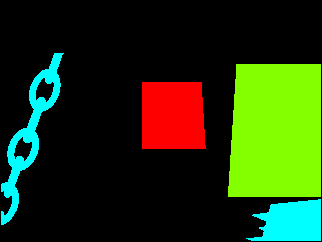
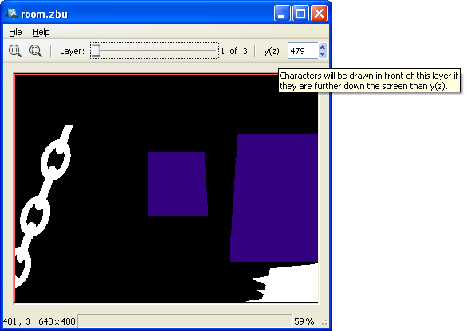

The SLUDGE Z-Buffer Maker is used to create different areas of a scene which can obscure character graphics, such as foreground silhouettes, doorframes and furniture.
The main work - specifying the areas - cannot be done from within the program itself and must instead be done using a paint package. For example, take the following room (taken from one of the demos):

The above room image has the following z-buffer image:

(The size and quality of these images has been reduced for the sake of this documentation - full versions of both images can be found as part of the verb coin example.)
Mixing these images together shows the concepts behind the z-buffer image, and which layers correspond with which areas in the actual image. Note that this is not a required stage of producing a z-buffer image; it is here only as an aid to understanding the reasons behind creating the image shown above.

A z-buffer image must have a black background and coloured areas that define where characters will be obscured by parts of the scene. You are allowed a maximum of 16 different colours - each colour will be treated as a different layer.
Save your z-buffer image as an uncompressed TGA file and open it in the SLUDGE Z-Buffer Maker using the New from TGA image command on the File menu (Win/Linux) or New zBuffer from TGA image command on the Tools menu. After loading the image from above, the Z-Buffer Maker looks like this:

The slider at the top of the window is used to select a layer, the selected layer is displayed in white and the y(z) field used to set the cut-off point of the selected layer. The cut-off point of the selected layer is also shown by a green horizontal line.Windows/Linux: The cut-off point can also be set using the left mouse button. If your scene is larger than the SLUDGE Z-Buffer Maker window, you can scroll around the image by holding down the right mouse button and dragging the mouse in the direction in which you wish to move.
Mac: The image can be scrolled by dragging the mouse and zoomed in/out by two-finger scrolling. The cut-off point can be adjusted by holding down Command and dragging the mouse.
The purpose of the Z-Buffer Maker is to associate cut-off points to the layers defined by the z-buffer image. The cut-off point is the y-value below which a character must be standing in order to be shown in front of the layer in question. By default, when a TGA image is loaded, the cut-off point for each layer is the y-value of the lowest pixel used in the layer.
For example, the cut-off points for the above example are initially set to the following: layer 1 (cyan) has a y-value of 479, layer 2 (green) has a y-value of 392 and layer 3 (red) has a y-value of 296.
It is possible to set a cut-off point to a larger value than the height of the screen, which is useful if you want to move a character off the bottom of the screen but still have them obscured by an object.
To save your z-buffer file in the format used by SLUDGE, open the File menu and choose Save or Save as.... The Save option will overwrite the z-buffer file from which the current data was loaded... if the current data was loaded from an image file, it will do the same as the Save as... option, which allows you to save the data under any file name.
To load your z-buffer file into a game, use the setZBuffer function with its file handle as the parameter. To remove a z-buffer from memory in your game, call the same function with NULL as the parameter.
SLUDGE and this SLUDGE documentation are copyright Hungry Software and contributors 2000-2010